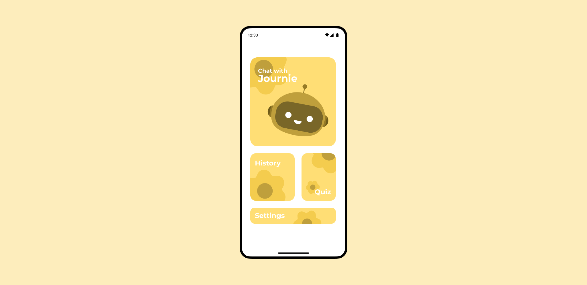
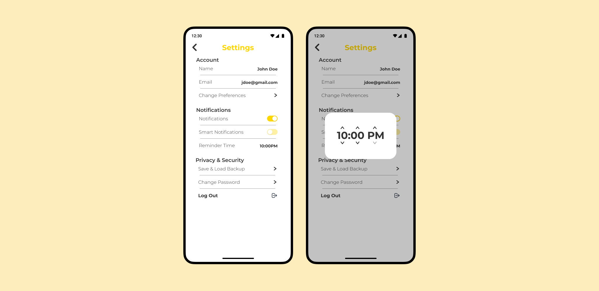

17 AUG 2024 | BY EMILY LOH

Stock photo of an iPhone representing mental love on its screen
In my high school years, I stopped writing in a physical diary and got lost in the messes of teenage happenings. With my first phone in hand, I downloaded numerous self-help apps that trained you to create better habits and journal daily while practicing other mindful activities. But there was still something missing. I felt that I had too many apps, many of which I didn’t even use after a few times. When I started narrowing down the apps to my favorites, I found that those were missing some things too! Either the app, internally, was too cluttered for my already cluttered mind or the app just wasn’t enticing enough to return to every night and I felt less and less obligated to go back to it the longer I spent away from it.
Growing A Solution
After many years of trying different apps, I finally decided to change things up by creating my own idea even if it was my first 100% self-designed app. I wanted to develop something that was straightforward and easy to use. I find myself buried in daily activities that cause me to, even unwillingly, limit my screen time on my phone. And when I do get onto my device, it is usually to reply to messages or spend some time on mobile games and social media. Many of my other apps like my habit trackers, journals, academic tools, and health apps are all set aside.
I want to make my app easy to go back to. No impending notification at 10PM. No useless reminders. No cluttered UI. This would mean the user experience is smooth and quick with less clicks to reach a wanted page or letting the user personalize their notification experience. To keep it light, the application can’t have too many features. A main feature and possibly 1-2 sub features will be enough. And keep it in plain sight on the home page.
Mental health articles? Well most people don’t read those, especially users who are just getting into good habits. People need to start from somewhere easy and not be information dumped and overwhelmed by the growth they have to experience. Little burden is good.
The goal of this application is not to perfect someone’s journey to better self help but to push them into positive habits by giving them a very simple, easy yet significant habit to start off with. Easy interface and easy activity.
Creating My Main Feature: Journie
In 2018, I discovered an app named Youper. It was essentially a chatbot for mental health. It helps you by stating important questions for you to answer to get through an obstacle in life or just simply to break down your day. I found this very useful as introspection is important to improving your quality of life. I used this app the longest but somewhere in time I started becoming overly obsessed with the diagnostic tests it provided. When I stopped playing with the tests, I eventually got bored and didn’t go back because it felt like I could do it myself on paper rather than with an AI.
Now the Youper app is probably more advanced by now. But I wanted my chatbot to be more friendly and more realistic. So when I decided on making this app, I knew right away that I wanted to make a chatbot. This chatbot will have a more human response to things you say and be less structured around a script like customer service chatbots are so that the user, when chatting with Journie, the chatbot, doesn’t feel like they are filling out a form but instead, creating a conversation.
Little Burden On Your Shoulders
Do you ever open an app and feel that there is too much to see? Like you were only there to post photos but there are so many other things to click? Some apps use this multi-feature effect on their apps on purpose to create distractions and a never ending reason to continue using the app and rubbing off minutes to hours of your time. I didn’t want that for my app so a simple interface was the goal.
First, the app will open up with a screen that just has a quote or message. This will put all the user’s focus on the message that can be used as an inspiration for their discussion with Journie or just simply something for them to think about in the back of their minds. After seeing these messages constantly, it will be implicitly ingrained in their minds and hopefully improve their quality of life in the long run.
Then they would be introduced to the Home page which has four main buttons: the chatbot, settings, history, and quiz which I will explain later down the line. But these are the four features I decided to go with to keep it simple. Both quiz and history are sub-features that are very straightforward for the users and if they don’t feel that those features are relevant to them, ignoring them is easy since they do not cluster up the page and are not stressed onto the user to use them since the chatbot is the most important.
Design of the Journie home page by Emily Loh
Secondly, I want to give the users little responsibility to go out of their way to spend too much time on this app. To do this, the app must be simple and concise but also fun and surprising, keeping it casual. I decided to do this by introducing smart notifications that include fun messages. Though it will be an obstacle in development, smart notifications are really great ways to invite the user back into the app. As Luis von Ahn, the founder of Duolingo, noted, it just makes sense to send notifications to users during a time that they were last seen on the app the previous day. I mean, in most cases, they are free to spend two to five minutes on the app around the same time. Duolingo uses an array of different messages that invite the user back into the streak they are trying to keep or to encourage the user to climb the leaderboards. Unlike Duo the green bird, I would like to give my users kinder messages such as congratulating the small things.
The user can choose to turn on and off this smart notification if they wish. For people who work better on a routine, they may just want a simple reminder everyday at a certain time instead of one that is more sporadic. But I think a little random message during the day would certainly lighten my mood or ground me in my truth.
Design of the Journie settings page by Emily Loh
History and Quiz
Now for the sub-features, I brainstormed several different ideas but these two were the most important to me. A manual journal was an idea but that defeats the purpose of the chatbot, a mindfulness feature but that might be too strong of a feature and fight with the chatbot purpose of the app especially since there are plenty of other apps that have mindfulness as their core aim, why fight with them?
I decided on a little activity quiz which allows the user to answer some simple questions and get suggested an activity to do. I find myself dreading activity days where I schedule a time to paint, play the piano, or watch a movie. Because I put it on my schedule the night before, it feels like a chore. While routine is good, I find more stress in having to achieve this me-time task like it’s homework. I decided to make a quiz so when I do block out time for myself, I simply fill in the quiz to do a certain activity. Or when I’m in a rush, I can answer the quiz differently to get quick and easy activities to do to decrease stress or ground myself.
Then for the history feature, I believe some people would want to reflect over a previous conversation with Journie. Maybe they would laugh about it, maybe they would cry while reading it, or maybe they would smile at their own growth. I also want to make it so that the user can choose not to save their entries. This is another factor in personalizing their experience. I hope that this app can be a strong tool that they can decide what they want from.
Our Development
The app has gone through a lot of design changes and probably will continue to change as more development goes through. Certain things like emergency resources or some settings features that I don’t have in the design yet will probably come in after some testing and development. A lot of time will have to be put into learning how to use OpenAI for my chatbot, creating smart notifications in an actual smart way, and keeping the chat histories from the chatbot. But, in the case that my idea does go out to the market, I hope that it will help numerous people to find their own journey.